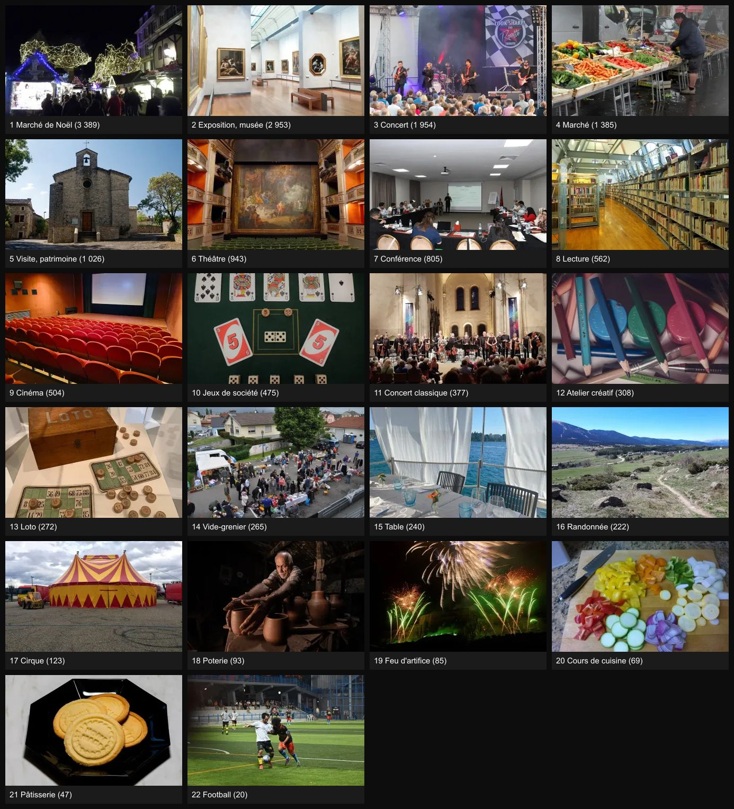
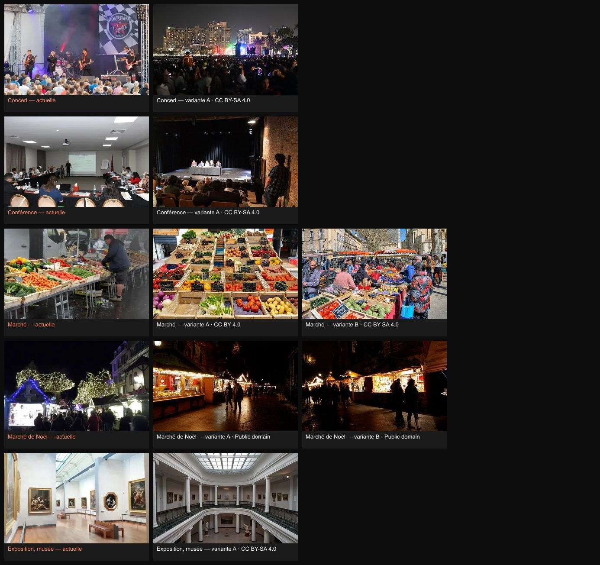

Les 22 illustrations actuelles (entre parenthèses : le nombre de sorties de l’agenda national qu’elles illustrent). À remplacer en priorité : le concert (banderole d’un groupe lisible), la conférence (salle de réunion terne), le marché (étal mouillé), le cirque (chapiteau sur un parking — aucune meilleure photo trouvée pour l’instant).

Pour les thèmes qui reviennent le plus souvent. Une fois choisies, chaque sortie garde la même variante, et deux sorties voisines du même thème ne partagent plus la même photo.
